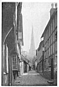
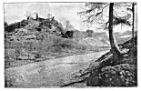

Sacred Texts Legends & Sagas England Index Previous Next
ENDWORD.
I close up my patchwork pages for this booklet, and a tired brain finds relief in two memories. The one of the day, just on half a century ago, when, a lad on a trader's route for my father's brewery, I pulled up my horse to look with wonder at the Four Stones, standing like sentinels in a field corner. Later in the same day, the steep slope of the Radnor Forest surmounted, came the first view of Castle Tomen at the summit of the Forest road, with its background of Wye and Irfon Valley (Breconshire) Mountains. And the note of unsatisfied wonder struck that day has lingered through nearly fifty years' unusually intimate knowledge of our beautiful West Country border land, and I know now that my sub-conscious self had prepared the ground and worked at the problem I now see solved.
The second memory is the vivid one of the rush of revelations in the gorgeous year of sunshine just finished. And I can scarcely realize that half the year had gone, the clear smoke-free distances of early summer a thing of the past, and midsummer day over, before I got the first clue. Once started, I found no halt in the sequence of new facts revealed by active search on the tracks.
It is a mere framework for a new knowledge that I offer, but I know that it has solid foundations, and that good wholesome field work by others--for it may not be granted to me to do very much more--will fill in many gaps. That is why I write.
POSTSCRIPT. In some districts--as Salisbury Plain and the Yorkshire Wolds--there are groups of adjacent barrows so numerous that it is probable that most of them were built as burial mounds only, not sighting mounds. This is not the case in the district investigated.

Ledbury, the Spire sighed up Church Lane.">
Click to enlarge
PLATE XV. CHURCH.
Ledbury, the Spire sighed up Church Lane.
{kind=link}

Wigmore Castle, showing the sighting mound.">
Click to enlarge
PLATE XVI. CASTLE.
Wigmore Castle, showing the sighting mound.
{kind=link}
![g'.г.Ail maiden ©uмонетი: ℞ubli© ძ'ommAin 🖼 ImageI by 'Art'hur R_AckHÅm' & All inclusive names to my Roots && me, me I.B.M.l. ასლაჼ კლდიაშვილი, А©ЛАჼ ©КЛიДиÅWвიЛи [1922], @novadays ი.ბ. АйбоЛит [Aibolem МЕЛОДИЯR₾ი მო'სი'კვÅჼ]](https://barionleg.github.io/db-sacred-texts.li/neu/ba_geo_f.png) |